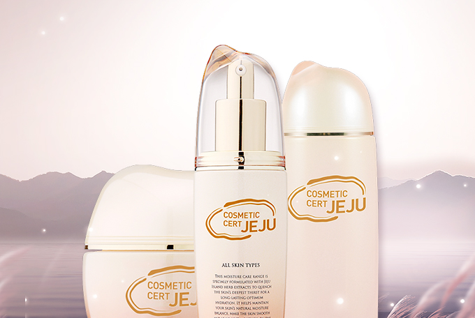
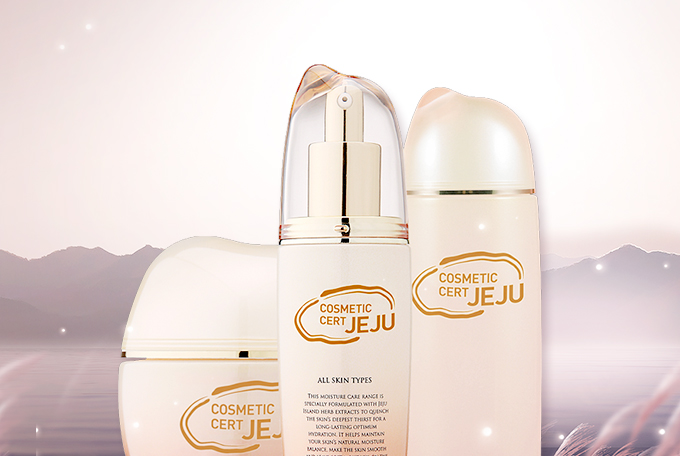
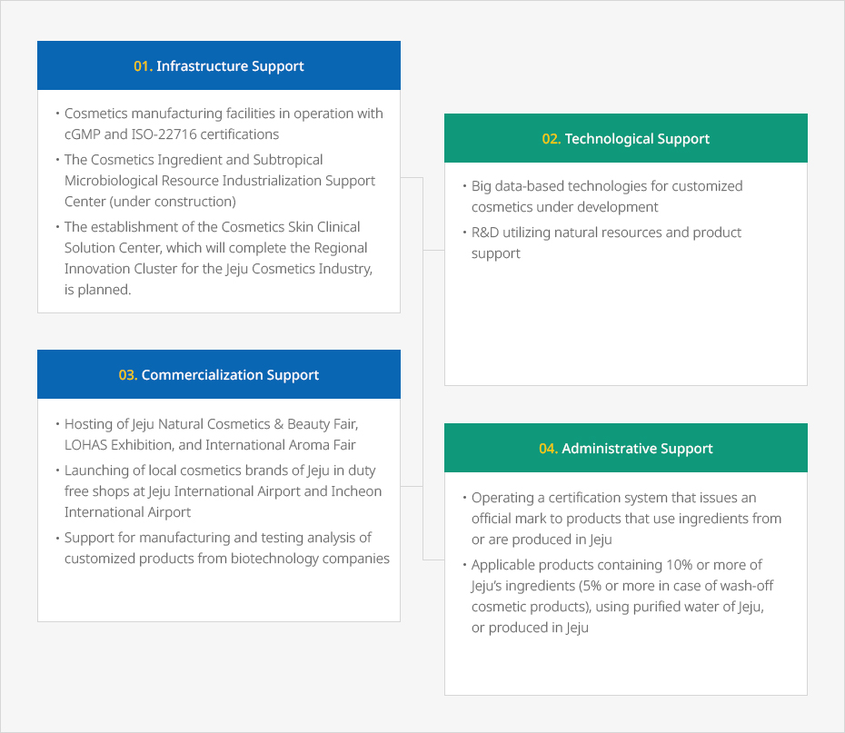

Biotechnology
- Home
- Investment Environment
- Promising Industries
- Biotechnology
Cosmetics Raw Materials Industry
 

The cosmetics industry utilizing natural resources extracted from Jeju’s clean and unique vegetation environment continues to see an increase in output, industrial scale, and sales every year based on its continued administrative and financial support.
This industry has a solid value chain that is comprised of the procurement of cosmetic raw materials, production, and distribution, as well as high-quality research facilities.
Jeju Technopark has published a directory of natural raw materials from Jeju by classifying those cosmetic ingredients registered in the International Cosmetic Ingredient Directory (ICID), and launched Jeju Cosmetic Certification to enhance the value and competitiveness of cosmetics produced in Jeju.
Jeju itself has long been a renowned brand in East Asia. Therefore, a bio and cosmetics ingredient industry armed with the “Clean Jeju” brand has unlimited possibilities.
Jeju’s Main Biological Resources
-
Pure Water
- Water is purified by passing through layers of volcanic bedrock over a long period of time.
- Jeju Samdasoo, mineral water produced by Jeju Province Development Corporation, is a successful case of the commercialization of Jeju’s groundwater resource.
- Over the two decades since its launch in 1998, Jeju Samdasoo has been the best-selling bottled water brand in Korea, recording the highest domestic sales volume of 840,000 tons in 2018.
-
Lava Seawater
- Lava seawater is produced as seawater runs underground and is naturally filtered through volcanic bedrock.
- The water contains valuable natural minerals such as calcium, magnesium, vanadium, and germanium, making it a versatile resource.
- Currently, cosmetics and food industry businesses occupy the first and second Lava Seawater Industrialization Support Centers.
-
Volcanic Pores
- Volcanic pores are natural ceramics derived from lava which are scattered throughout the island
- Volcanic pores contains a variety of minerals and therefore have a range of benefits, including absorption, adhesion, antibacterial function, and radiation of far infrared and negative ions.
-
Seaweed
- Over 700 species of seaweed such as gulfweed, sweet laver, sea mustard, and hizikia fusiformis
- Seaweed is a popular ingredient in food, medicine, and cosmetics
-
Camellia, Green Tea, Canola, & Tangerines
- Major local specialties of Jeju Island, which are also used as approved cosmetics ingredients
- Local naturalism cosmetics brands have already marketed different products using these ingredients.
Diverse Support for Bio Industries


-
01.Infrastructure Support
- Cosmetics manufacturing facilities in operation with cGMP and ISO-22716 certifications
- The Cosmetics Ingredient and Subtropical Microbiological Resource Industrialization Support Center (under construction)
- The establishment of the Cosmetics Skin Clinical Solution Center, which will complete the Regional Innovation Cluster for the Jeju Cosmetics Industry, is planned.
-
02. Technological Support
- Big data-based technologies for customized cosmetics under development
- R&D utilizing natural resources and product support
-
03. Commercialization Support
- Hosting of Jeju Natural Cosmetics & Beauty Fair, LOHAS Exhibition, and International Aroma Fair
- Launching of local cosmetics brands of Jeju in duty free shops at Jeju International Airport and Incheon International Airport
- Support for manufacturing and testing analysis of customized products from biotechnology companies
-
04. Administrative Support
- Cosmetics manufacturing facilities in operation with cGMP and ISO-22716 certifications
- The Cosmetic Ingredient and Subtropical Microbiological Resource Industrialization Support Center under construction
- The establishment of the Cosmetics Skin Clinical Solution Center, which will complete the Regional Innovation Cluster for the Jeju Cosmetic Industry, is planned.